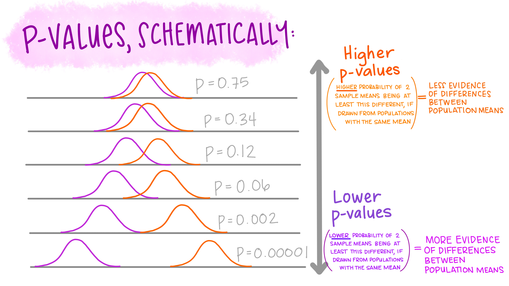
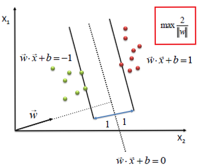

6 Support Vector Machines for Binary Classification
“Support Vector Machines should be in the tool bag of every civilized person.”
Patrick Henry Winston 1
6.1 Introduction
Support Vector Machine (SVM) learning is a supervised learning technique that may be used as a binary classification system or to find a regression formula. Support vector machines are a “maximum margin classifier. SVM finds the separating hyperplane with the maximum margin to its closest data points.” 2
Although there are many mathematical approaches to solving SVM, many of which include kernels, let us first describe the Linear SVM used for binary classification. Consider a situation where we need to distinguish between two circumstances, or classes.
In an imaginary biochemistry laboratory, researchers discover a novel enzyme found in different tissues throughout the human body. Biochemists purify the enzyme from several cadavers and several different tissue types. Literature suggests that this newly found enzyme has two isozymes, 1) Alpha has a high reaction rate and 2) Beta has a lower reaction rate. It now seems like a simple task to learn which isozymes you possess. Carry out kinetic enzyme analysis on the purified samples then attempt to classify them.
Once you have carried out the kinetic analysis you then determine the Michaelis–Menten constant, \(K_M\). The \(K_M\) constant is plotted on a single axis and produces the graphic below.

Figure 6.1: Is linearly separable data.
6.2 Linearly Separable
In test #1, we can see the two isozymes can easily separated by activity alone. Figure 1 demonstrates that the data is linearly separable. The dataset is linearly separable if a single straight line can partition the data. In more general terms, “if the classes are linearly separable, it can be shown that the algorithm converges to a separating hyperplane.” 3 As Cortes and Vapnik indicate the hyperplane is the decision boundary of any high dimension feature space, considering a hyperplane has one less dimension than its n-dimensional space.
Incidentally, in Patrick Winston’s lecture on SVM, he calls SVM the “widest street approach.” 4 Why does Professor Winston use this term? There are many possible streets which can be traced but the goal is to find the widest street. Many streets may be drawn in our example, but requiring the widest street leads to one. In fact, “an optimal hyperplane is here defined as the linear decision function with maximal margin between the vectors of the two classes.” 5

Adding the prosaic phrase widest street smartly leads to the idea that a widest decision boundary also has the greatest ability to generalize.
 7
However in real life, linearly separabale data is rarely the case. Most often the activities are mixed as shown in test #2.

Figure 6.2: Is not linearly separable data.
6.3 Understanding the hyperplane equation
If we were trying to find:
\[\begin{equation} \frac{1}{2} \widehat W (X_{\oplus} ~-~ X_{\ominus}) \end{equation}\]
Where \(\widehat W ~= \left ( \frac{x_1}{||x||}, ~ \frac{x_2}{||x||} \right )\) and \(X_{\oplus}\) and \(X_{\ominus}\) represent data points that are labeled either positive or negative.
Suppose that \(X_{\oplus}\) and \(X_{\ominus}\) are equidistant from the decision boundary:
Where \(a\) represents the region above the hyperplane;
\[\begin{equation} W^T X_{\oplus} + b = a \end{equation}\]
and where \(-a\) represents the region below the hyperplane or decision boundary.
\[\begin{equation} W^T X_{\ominus} + b = -a \end{equation}\]
Subtracting the two equations:
\[\begin{equation} W^T (X_{\oplus} ~-~ X_{\ominus}) = 2a \end{equation}\]
Divide by the norm of w:
\[\begin{equation} \widehat W^T (X_{\oplus} ~-~ X_{\ominus}) = \frac{2a}{||W||} \end{equation}\]
 8
6.4 Soft Margins
In the case above, the activities overlap hence determining which isozyme is Alpha or Gamma is more difficult. In 1995, C. Cortes and V. Vapnik introduced the mathematics and ideas for “Soft Margins” or non-separable training data.9
The same is true of an n-dimensional system.
The first mention of an SVM like system is by Vapnik and Lerner in 1963, where the two described an implementation of a non-linear generalization called a Generalized Portrait algorithm.10 As research has progressed, the types and complexity of SVM implementations have grown to encompass many circumstances. The ability of SVM to deal with different problems and handle different decision boundary shapes has made SVM a potent tool.
For example, this experiment has chosen to investigate three possible decision boundary shapes for the two-class protein data. The three mathematical constructs which will be tested are:
- Linear hyperplane (also known as “plain-vanilla”),
- Curvilinear or polynomial hyperplane and,
- A radial basis function hyperplane,
- Sigmoidal.
6.4.1 Linear: \(K(x, ~y) ~=~ w^T x + b\)
- The linear kernel does not transform the data at all.
Three common SVM kernel formulae investigated are:
6.4.2 Polynomial: \(K(x_i, ~y) ~=~ ( \gamma ~x_i^T ~x_j ~+~ r)^{\Large d}, ~~ \gamma > 0\)
- The polynomial kernel has a straightforward non-linear transform of the data.
- Such that \(~\gamma, ~r\), and \(d\) are kernel parameters.
6.4.3 Radial Basis Function (RBF): \(K(x_i, x_j) ~=~ exp ( - {\gamma} \parallel x_i^T - x_j \parallel ^2 ), ~~ \gamma >0\)
- The Gaussian RBF kernel which performs well on many data and is a good default
6.4.4 Sigmoidal: \(K(x, y) ~=~ {\tanh} (\gamma~ x^T ~ y ~+~ r ), ~~ \gamma >0\)
- Incidentally, The sigmoid kernel produces an SVM analogous to the activation function similar to a [perceptron] with a sigmoid activation function.11
It is essential to note, at this time, there are no reliable rules for which kernel, i.e., boundary shape, to use with any given data set.
Plots of 4 common SVM boundary shapes:

6.4.5 SVM-Linear
The simplest form of SVM utilizes a hyperplane as a separating element between the positive and control protein observations. This type of implementation is denoted as SVM-Linear (svm-lin) in this report. Here the mathematics is more easily described and can even be shown with a simple 2-dimensional graphic.
Given a set of labeled pairs of data:
\[\begin{equation} \{(X_1, ~y),~ ...,~ (X_m, ~y)\},~~~ y \in \{1, ~-1\}, ~~~ where ~X^{m~x~n} \in \Re \end{equation}\]
For mathematical convenience, the labels are a set of values 1 or -1.
Therefore, we may write.
\[\begin{equation} f(x_i) = \left\{ \begin{array}{cc} x \geq 0; ~y = 1 \\ x < 0; ~y = -1 \end{array} \right. \end{equation}\]
This is no different than is currently done in beginner level algebra. As is shown in the example below, the same is true for higher-dimensional problems.
Will be described and calculated in more detail in this report. However, there are alternative implementations of SVM.
In this experiment, three implementations of SVM have been used. The three are denoted as SVM-Linear (svm-lin), SVM-Polynomial (svm-poly), and SVM-Radial Basis Function (svm-rbf).
The switches in the R/caret software are easy such that one can use a number of kernels by changing the name of method..
with differing amounts of hyperparameters to modify. The intuition for the svm-poly and svm-rbf is also fairly straightforward. Instead of using a linear hyperplane to bisect the hi-dimensional space, which describes the decision boundary, the mathematics for a polynomial curvilinear function or a radial basis function may be utilized.
Yet another measurable difference that was investigated in this experiment was the use of a kernel transformation. It is conceivable to envision a hyperplane with no transformations utilized. Alternatively, the kernel transformations of original data can be used to increase the ability of the function to differentiate between positively and negatively labeled samples. A mathematical treatment can be found by Christopher Burges.13
As the usage of SVM grew, different issues presented problems for defining and coding the decision boundary were found. In the simplest case, the data points that sit along the support vector are nicely and neatly on the positive or the negative side. This is known as a hard margin which delineates the decision boundary. In reality, the decision boundary may include positive or negative datapoints that sporadically cross the boundary. In the circumstance where the decision boundary has similar points on either side, a penalty may be enlisted to deter the mathematics from choosing a boundary that includes too many misfit datapoints. In 1995, Support Vector Machines were described by Vladimir Vapnik and Corinna Cortes while at Bell Labs dealt with the soft-margin that occurs in the above situation.14
SVM is a non-parametric approach to regression and classification models.
What is Non-parametric?
For that matter, what is parametric learning and models. Just as we have learned that machine learning models can be supervised, unsupervised, or even semi-supervised another characteristic between machine learning models is whether they are parametric or not.
In Webster’s dictionary 15 states a parameter is
Estimation of values which enter into the equation representing the chosen relation
“[An] independent variable through functions of which other functions may be expressed”, Frank Yates, a 20th-century statistician
Another excellent explanation of this idea includes;
Does the model have a fixed number of parameters, or does the number of parameters grow with the amount of training data? The former is called a parametric model, and the latter is called a non-parametric model. Parametric models have the advantage of often being faster to use, but the disadvantage of making stronger assumptions about the nature of the data distributions. Non-parametric models are more flexible, but often computationally intractable for large datasets.16
Since Support Vector Machines are best described as a system where increasing the amount of training data, the numbers of parameters may grow as well. Therefore SVM is a non-parametric technique. Considering this idea in more detail, the estimation of the decision boundary does not entirely rely on the estimation of independent values (i.e., the values of the parameters). SVM is fascinating because the decision boundary may only rely on a small number of data points, otherwise known as support vectors.
In short, one guiding idea of SVM is a geometric one. In a binary-class learning system, the metric for the concept of the “best” classification function can be realized geometrically17 by using a line or a plane (more precisely called a hyperplane when discussing multi-dimensional datasets) to separate the two labeled groups. The hyperplane that separates the labeled sets is also known as a decision boundary.
This decision boundary can be described as having a hard or soft margin. As one might suspect, there are instances where the delineation between the labels is pronounced when this occurs decision boundary produces a hard margin. Alternatively, when the demarcation between the labeled groups is not so well defined by a straight and rigid line, the decision boundary provided is a soft margin. In either case, researchers have built up mathematics to deal with hard and soft margins. As an aside, the use of penalization is one method for coping with data points that impinge on the boundary hyperplane.
By introducing a “soft margin” instead of a hard boundary, we can add a slack variable xi to account for the amount of a violation by the classifier, which later can be minimized.
In short, one guiding idea of SVM is a geometric one. In a binary-class learning system, the metric for the concept of the “best” classification function can be realized geometrically18 by using a line or a plane (more precisely called a hyperplane when discussing multi-dimensional datasets) to separate the two labeled groups. The hyperplane that separates the labeled sets is also known as a decision boundary.
Incidentally,
Big O notation 19
| Algorithm | Training | Prediction |
|---|---|---|
| SVM (Kernel) | O\((n^2 p + n^3)\) | O\((n_s v_p)\) |
Where p is the number of features, n_s v_p is the number of support vectors
There are three properties that make SVMs attractive for data scientists:20
SVMs construct a maximum margin separator—a decision boundary with the largest possible distance to example points. This helps them generalize well.
SVMs create a linear separating hyperplane, but they have the ability to embed the data into a higher-dimensional space, using the so-called kernel trick. Often, data that are not linearly separable in the original input space are easily separable in the higher- dimensional space. The high-dimensional linear separator is actually nonlinear in the original space. This means the hypothesis space is greatly expanded over methods that use strictly linear representations.
SVMs are a nonparametric method—they retain training examples and potentially need to store them all. On the other hand, in practice they often end up retaining only a small fraction of the number of examples—sometimes as few as a small constant times the number of dimensions. Thus SVMs combine the advantages of nonparametric and parametric models: they have the flexibility to represent complex functions, but they are resistant to overfitting.
6.5 SVM-Linear with No Kernel
# Load Libraries
Libraries <- c("doMC", "knitr", "readr", "tidyverse", "caret", "kernlab")
for (p in Libraries) { # Install Library if not present
if (!require(p, character.only = TRUE)) { install.packages(p) }
library(p, character.only = TRUE)
}# Import data & data handling
c_m_TRANSFORMED <- read_csv("./00-data/02-aac_dpc_values/c_m_TRANSFORMED.csv",
col_types = cols(Class = col_factor(levels = c("0", "1")),
PID = col_skip(),
TotalAA = col_skip()))Partition data into training and testing sets
set.seed(1000)
index <- createDataPartition(c_m_TRANSFORMED$Class, p = 0.8, list = FALSE)
training_set <- c_m_TRANSFORMED[ index,]
test_set <- c_m_TRANSFORMED[-index,]
Class_test <- as.factor(test_set$Class)6.5.1 SVM-Linear Training
set.seed(1000)
registerDoMC(cores = 3) # Start multi-processor mode
start_time <- Sys.time() # Start timer
# tuneGrid = svmLinearGrid
svmLinearGrid <- expand.grid(C = c(2^(4.5), 2^5, 2^(5.5)))
# Create model, 10X fold CV repeated 5X
tcontrol <- trainControl(method = "repeatedcv",
number = 10,
repeats = 5,
savePredictions = "final") # IMPORTANT: Saves predictions for retreival
lin_model_obj <- train(Class ~ .,
data = training_set,
method = "svmLinear",
trControl = tcontrol,
tuneGrid = svmLinearGrid)
end_time <- Sys.time() # End timer
end_time - start_time # Display time## Time difference of 2.057003 mins6.5.2 SVM-Linear Model Summary
## Support Vector Machines with Linear Kernel
##
## 1873 samples
## 20 predictor
## 2 classes: '0', '1'
##
## No pre-processing
## Resampling: Cross-Validated (10 fold, repeated 5 times)
## Summary of sample sizes: 1685, 1686, 1686, 1686, 1686, 1685, ...
## Resampling results across tuning parameters:
##
## C Accuracy Kappa
## 22.62742 0.9482199 0.8961196
## 32.00000 0.9484338 0.8965504
## 45.25483 0.9485402 0.8967687
##
## Accuracy was used to select the optimal model using the largest value.
## The final value used for the model was C = 45.25483.6.5.3 SVM-Linear Predict test_set
## 0 1
## 250 2176.5.4 SVM-Linear Confusion Matrix
## Confusion Matrix and Statistics
##
## Reference
## Prediction 0 1
## 0 234 16
## 1 9 208
##
## Accuracy : 0.9465
## 95% CI : (0.922, 0.9651)
## No Information Rate : 0.5203
## P-Value [Acc > NIR] : <2e-16
##
## Kappa : 0.8926
##
## Mcnemar's Test P-Value : 0.2301
##
## Sensitivity : 0.9286
## Specificity : 0.9630
## Pos Pred Value : 0.9585
## Neg Pred Value : 0.9360
## Prevalence : 0.4797
## Detection Rate : 0.4454
## Detection Prevalence : 0.4647
## Balanced Accuracy : 0.9458
##
## 'Positive' Class : 1
## 6.5.5 SVM-Linear Obtain False Positives & False Negatives
fp_fn_svm_linear <- lin_model_obj %>% pluck("pred") %>% dplyr::filter(obs != pred)
# Write out to Outliers folder
write.table(fp_fn_svm_linear,
file = "./00-data/03-ml_results/fp_fn_svm_linear.csv",
row.names = FALSE,
na = "",
col.names = TRUE,
sep = ",")
nrow(fp_fn_svm_linear)## [1] 482## C pred obs rowIndex Resample
## 1 45.25483 0 1 1223 Fold01.Rep1
## 2 45.25483 0 1 1873 Fold03.Rep1
## 3 45.25483 0 1 1101 Fold05.Rep1
## 4 45.25483 0 1 1618 Fold04.Rep1
## 5 45.25483 0 1 1866 Fold01.Rep1
## 6 45.25483 0 1 1831 Fold05.Rep16.6 SVM-Poly Model
Partition data into training and testing sets
6.7 SVM-Poly Training
set.seed(1000)
registerDoMC(cores = 3) # Start multi-processor mode
start_time <- Sys.time() # Start timer
# Create model, 10X fold CV repeated 5X
tcontrol <- trainControl(method = "repeatedcv",
number = 10,
repeats = 5,
savePredictions = "final") # IMPORTANT: Saves predictions for retreival
poly_model_obj <- train(Class ~ .,
data = training_set,
method = "svmPoly",
trControl= tcontrol)
end_time <- Sys.time() # End timer
end_time - start_time # Display time## Time difference of 3.077063 mins6.8 SVM-Poly Model Summary
## Support Vector Machines with Polynomial Kernel
##
## 1873 samples
## 20 predictor
## 2 classes: '0', '1'
##
## No pre-processing
## Resampling: Cross-Validated (10 fold, repeated 5 times)
## Summary of sample sizes: 1685, 1686, 1686, 1686, 1686, 1685, ...
## Resampling results across tuning parameters:
##
## degree scale C Accuracy Kappa
## 1 0.001 0.25 0.8927921 0.7837449
## 1 0.001 0.50 0.8931101 0.7842397
## 1 0.001 1.00 0.8995164 0.7972922
## 1 0.010 0.25 0.9069985 0.8125193
## 1 0.010 0.50 0.9182148 0.8352852
## 1 0.010 1.00 0.9243031 0.8476521
## 1 0.100 0.25 0.9266532 0.8524643
## 1 0.100 0.50 0.9326311 0.8645594
## 1 0.100 1.00 0.9340187 0.8674061
## 2 0.001 0.25 0.8935368 0.7851036
## 2 0.001 0.50 0.8997298 0.7977161
## 2 0.001 1.00 0.9046473 0.8077461
## 2 0.010 0.25 0.9208824 0.8406987
## 2 0.010 0.50 0.9316686 0.8625657
## 2 0.010 1.00 0.9356167 0.8705585
## 2 0.100 0.25 0.9672198 0.9342616
## 2 0.100 0.50 0.9670042 0.9338334
## 2 0.100 1.00 0.9649755 0.9297728
## 3 0.001 0.25 0.8969559 0.7920424
## 3 0.001 0.50 0.9014433 0.8012428
## 3 0.001 1.00 0.9110610 0.8207620
## 3 0.010 0.25 0.9339083 0.8670639
## 3 0.010 0.50 0.9365781 0.8724848
## 3 0.010 1.00 0.9464057 0.8923335
## 3 0.100 0.25 0.9688252 0.9375066
## 3 0.100 0.50 0.9704278 0.9407533
## 3 0.100 1.00 0.9690403 0.9379858
##
## Accuracy was used to select the optimal model using the largest value.
## The final values used for the model were degree = 3, scale = 0.1 and C = 0.5.6.9 SVM-Poly Predict test_set
## 0 1
## 246 2216.10 SVM-Poly Confusion Matrix
## Confusion Matrix and Statistics
##
## Reference
## Prediction 0 1
## 0 238 8
## 1 5 216
##
## Accuracy : 0.9722
## 95% CI : (0.9529, 0.9851)
## No Information Rate : 0.5203
## P-Value [Acc > NIR] : <2e-16
##
## Kappa : 0.9442
##
## Mcnemar's Test P-Value : 0.5791
##
## Sensitivity : 0.9643
## Specificity : 0.9794
## Pos Pred Value : 0.9774
## Neg Pred Value : 0.9675
## Prevalence : 0.4797
## Detection Rate : 0.4625
## Detection Prevalence : 0.4732
## Balanced Accuracy : 0.9719
##
## 'Positive' Class : 1
## 6.11 SVM-Poly Obtain False Positives & False Negatives
fp_fn_svm_poly <- poly_model_obj %>% pluck("pred") %>% dplyr::filter(obs != pred)
# Write CSV in R
write.table(fp_fn_svm_poly,
file = "./00-data/03-ml_results/fp_fn_svm_poly.csv",
row.names = FALSE,
na = "",
col.names = TRUE,
sep=",")
nrow(fp_fn_svm_poly)## [1] 277## degree scale C pred obs rowIndex Resample
## 1 3 0.1 0.5 0 1 1576 Fold01.Rep2
## 2 3 0.1 0.5 1 0 182 Fold09.Rep4
## 3 3 0.1 0.5 1 0 445 Fold06.Rep5
## 4 3 0.1 0.5 1 0 531 Fold09.Rep4
## 5 3 0.1 0.5 1 0 115 Fold05.Rep2
## 6 3 0.1 0.5 0 1 1780 Fold02.Rep2Patrick Henry Winston, 6.034 Artificial Intelligence, Fall 2010, Massachusetts Institute of Technology: MIT OpenCourseWare, http://ocw.mit.edu/6-034F10↩
Nika Haghtalab & Thorsten Joachims, CS4780/5780 - Machine Learning for Intelligent Systems, Fall 2019, Cornell University, Department of Computer Science, https://www.cs.cornell.edu/courses/cs4780/2018fa/lectures/lecturenote09.html↩
Trevor Hastie, Robert Tibshirani, Jerome Friedman, The Elements of Statistical Learning; Data Mining, Inference, and Prediction, https://web.stanford.edu/~hastie/ElemStatLearn/, 2017↩
Patrick Winston, 6.034 Artificial Intelligence, Fall 2010, Massachusetts Institute of Technology: MIT OpenCourseWare, http://ocw.mit.edu/6-034F10↩
C. Cortes, V. Vapnik, Machine Learning, 20, 273-297, 1995↩
C. Cortes, V. Vapnik, Machine Learning, 20, 273-297, 1995↩
Allison Horst, University of California, Santa Barbara, https://github.com/allisonhorst/stats-illustrations↩
Trevor Hastie, Robert Tibshirani, Jerome Friedman, The Elements of Statistical Learning; Data Mining, Inference, and Prediction, https://web.stanford.edu/~hastie/ElemStatLearn/, 2017↩
C.Cortes, V.Vapnik, Machine Learning, 20, 273-297, 1995↩
V. Vapnik and A. Lerner, 1963. Pattern recognition using generalized portrait method. Automation and Remote Control, 24, 774–780↩
Vladimir Vapnik & Corinna Cortes, Machine Learning, 20, 273-297, 1995↩
Christopher Burges, Tutorial on Support Vector Machines for Pattern Recognition, D.M. & Knowl. Dis., 2, 121-167, 1998↩
Vladimir Vapnik & Corinna Cortes, Machine Learning, 20, 273-297, 1995↩
Webster’s third new international dictionary, ISBN 0-87779-201-1, 1986↩
Kevin P. Murphy, Machine Learning, A Probabilistic Perspective, MIT Press, ISBN 978-0-262-01802-9, 2012↩
Xindong Wu, et al., Top 10 algorithms in data mining, Knowl Inf Syst, 14:1–37, DOI:10.1007/s10115-007-0114-2, 2008↩
Xindong Wu, et al., Top 10 algorithms in data mining, Knowl Inf Syst, 14:1–37, DOI:10.1007/s10115-007-0114-2, 2008↩
Alexandros Karatzoglou, David Meyer, Kurt Hornik, ‘Support Vector Machines in R’, Journal of Statistical Software, April 2006, Volume 15, Issue 9.↩
Stuart Russell and Peter Norvig, Artificial Intelligence, A Modern Approach, Third Edition, Pearson, ISBN-13: 978-0-13-604259-4, 2010↩